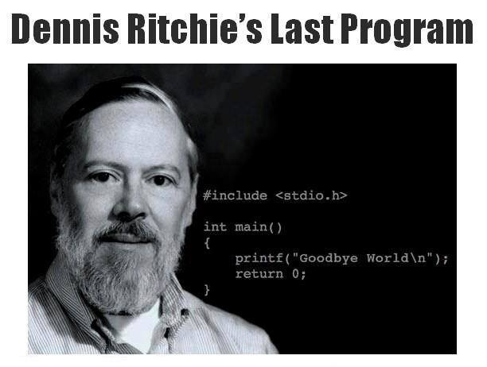

Tentaive date for mid-sem exam: Third Saturday of September 2017 (10:30 - 12:00).
Theory classes will be held on Tuesdays (12:30 - 01:30), Thursdays (11:30 - 12:30) and Fridays (11:30 - 12:30).
Lab classes will be held on Mondays B1 (02:00 - 06:00), Tuesdays B3 (02:00 - 06:00) and Wednesdays B2 (02:00 - 06:00).
